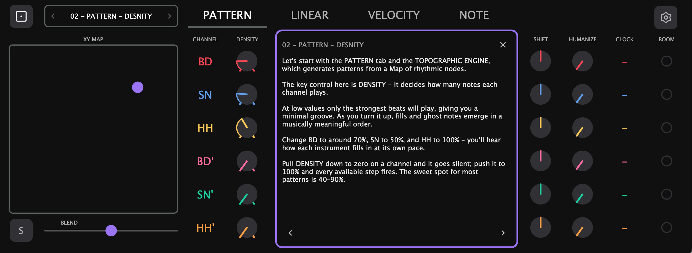
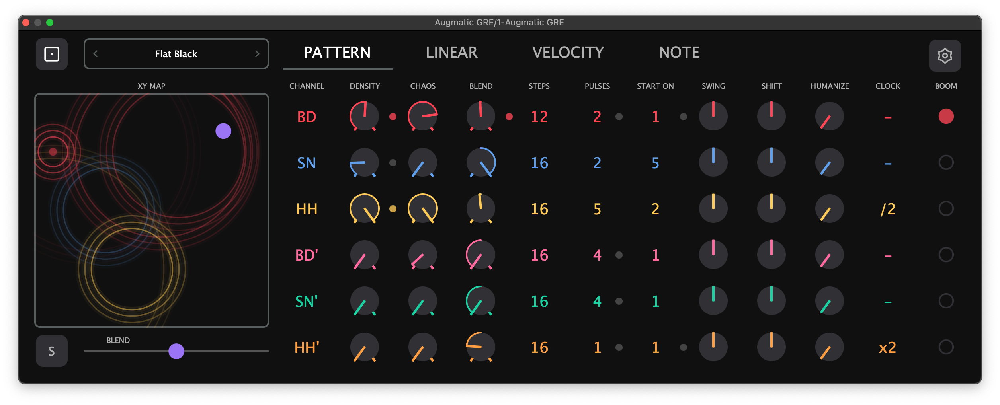
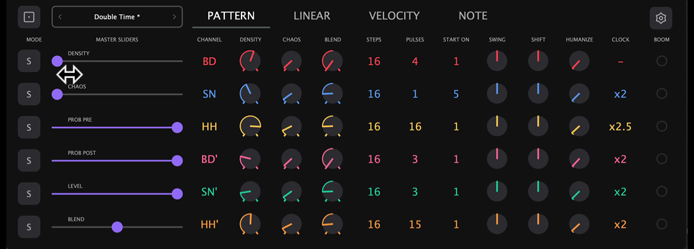
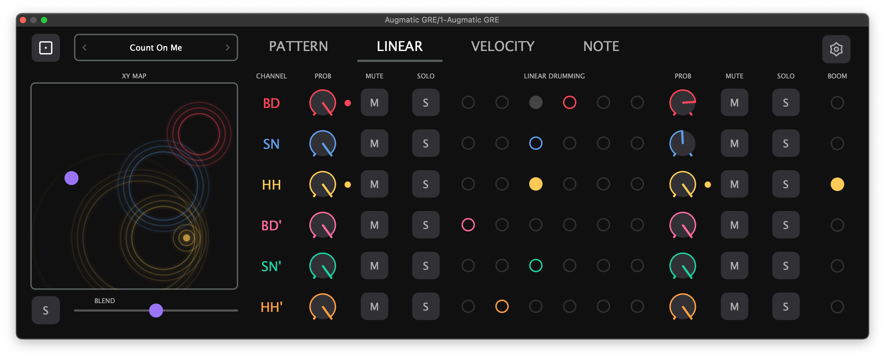
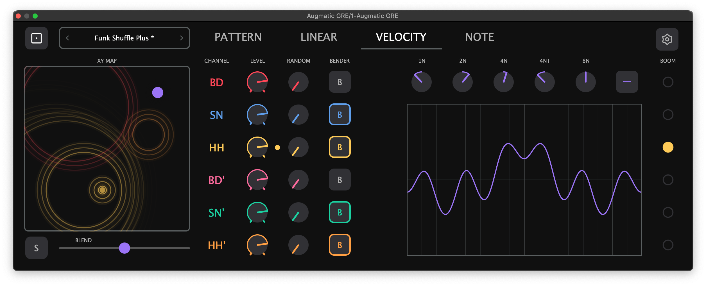
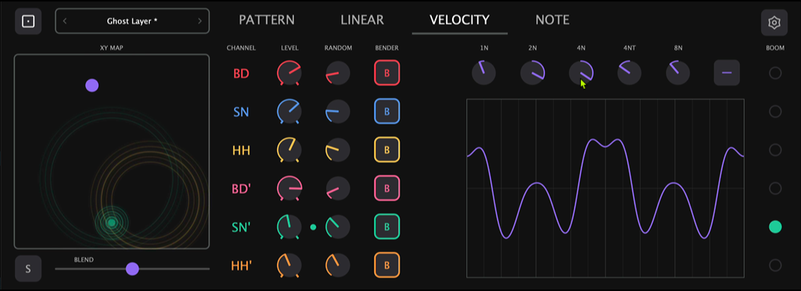
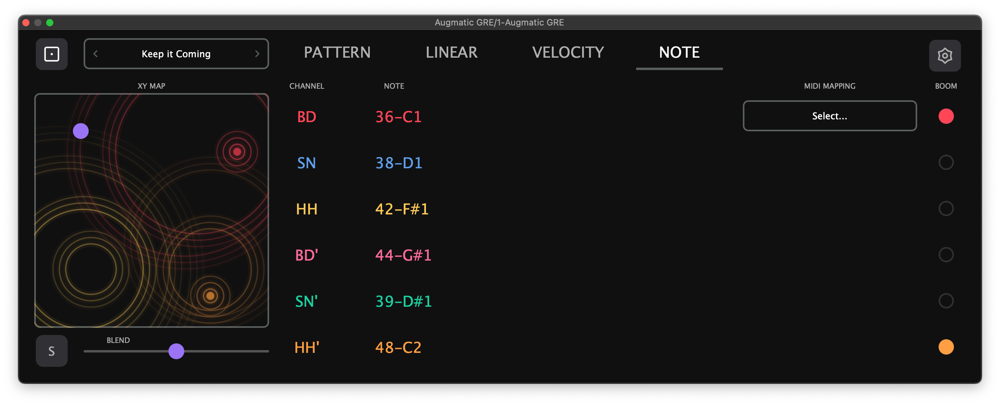
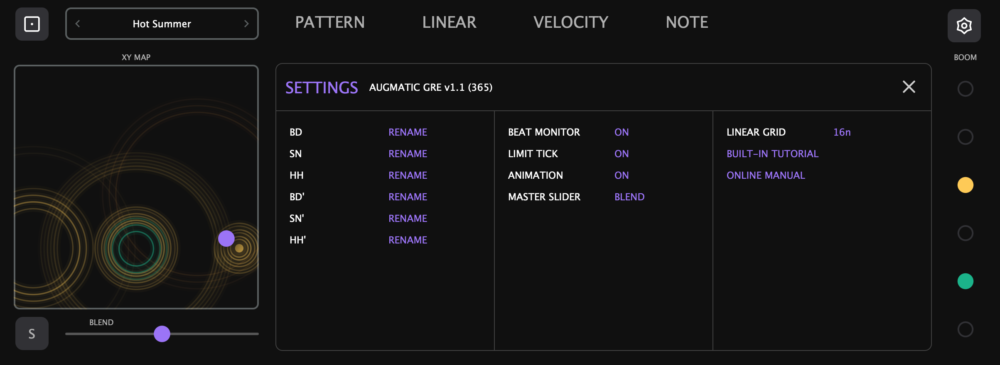
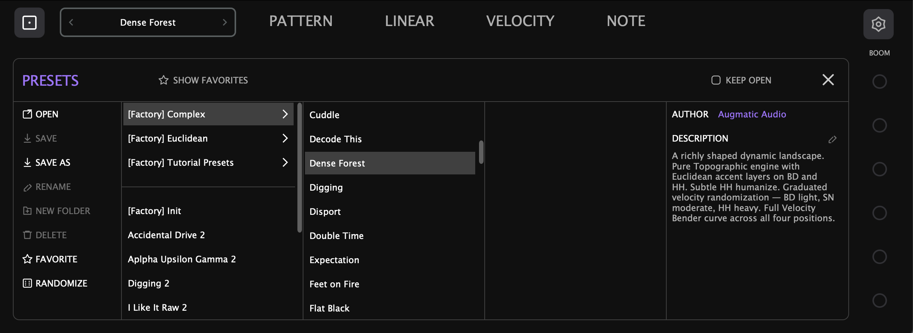
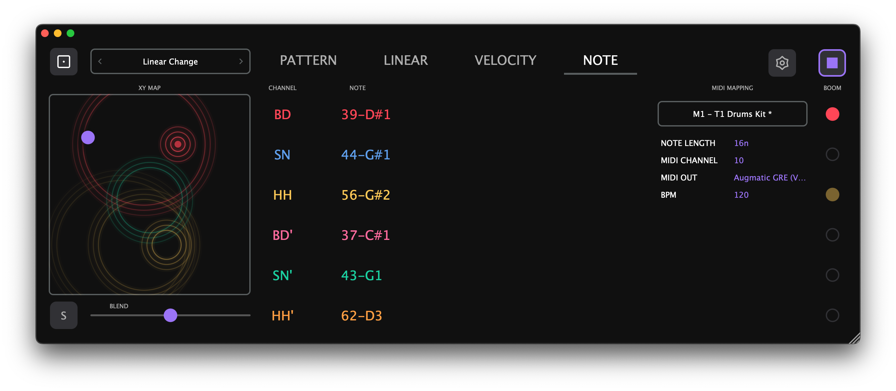

Augmatic GRE
用户手册
版本 1.2 - 2026年3月30日 - Changelog。
适用于 iPad、iPhone、macOS 和 Windows 的 AUv3 和 VST3 MIDI 鼓节奏生成器。
目录
简介
Augmatic GRE 使用经过验证的音乐算法生成不断演变的鼓节奏。在无穷无尽的节奏变化中自然地平衡简洁与复杂 — 无需繁琐的手动编程。
Augmatic GRE 是一款 AUv3 和 VST3 插件及独立应用程序，可为任何接受 MIDI 输入的软件或硬件鼓采样器或合成器生成 MIDI 音符。它本身不产生音频。
主要特性
- 6 个算法通道 — 底鼓、军鼓、踩镲，外加重音和幽灵音变体
- Topographic Engine — 可渐变的、不断演化的节拍 — 基于 Mutable Instruments Grids Eurorack 模块
- Euclidean Engine — 均匀分布的世界节奏模式
- Blend 控制 — 混合 Topographic 和 Euclidean 风格
- Linear Drumming — 同一时刻不会有两个鼓声同时触发
- Velocity Bender — 更具表现力的动态脉动
- Groove Tools — SWING、HUMANIZE、CLOCK Divider 和 SHIFT
乐器通道
| 通道 | 标签 | 默认名称 | 用途 |
|---|---|---|---|
| 1 | BD | Bass Drum | 主底鼓 — 驱动主节拍 |
| 2 | SN | Snare | 主军鼓 — 驱动反拍 |
| 3 | HH | Hi-Hat | 主踩镲 — 驱动脉冲 |
| 4 | BD' | BD Accent | 独立的底鼓重音 — 幽灵音、边击（拥有独立的 density/chaos） |
| 5 | SN' | SN Accent | 独立的军鼓重音 — 幽灵击、交叉击（拥有独立的 density/chaos） |
| 6 | HH' | HH Accent | 独立的踩镲重音 — 开镲、铃音（拥有独立的 density/chaos） |
每个通道可以使用以下两种节奏引擎之一：
- Topographic Engine — 基于 Mutable Instruments Grids Eurorack 模块。使用 XY Map 坐标在预编程的鼓节奏之间进行渐变。
- Euclidean Engine — 使用 Bjorklund 算法将脉冲均匀分布在各步中。可产生世界各地传统音乐中的节奏。
两个引擎并行运行。每通道的 Blend 控制可在两者之间混合，您可以为不同通道分配不同的引擎。
兼容的宿主软件
Augmatic GRE 是一款 AUv3 MIDI 处理器（aumi 类型），适用于 iPad、iPhone 和 macOS，同时也是 macOS 和 Windows 上的 VST3 乐器插件。
AUv3 宿主（iPad、iPhone、macOS）
AUM、Cubasis 3、Drambo、Loopy Pro、Logic Pro、GarageBand 等。
VST3 宿主（macOS、Windows）
Ableton Live、FL Studio、Reaper、Cubase、Bitwig Studio、Studio One 等。
将其加载为乐器，然后将其 MIDI 输出路由到另一轨道上的鼓采样器或合成器。
快速入门
AUv3（iPad、iPhone、macOS）
- 安装 — 从 App Store 下载 Augmatic GRE
- 启动独立应用一次 — 这会在系统中注册 AUv3 扩展
- 打开宿主软件（Logic Pro、AUM、Cubasis 等）
- 添加 Augmatic GRE 到 MIDI 效果或 MIDI 源插槽中
- 路由 MIDI 输出到鼓乐器
- 按下播放 — 节奏生成后 MIDI 音符将流向您的乐器
VST3（macOS、Windows）
- 安装 — 运行安装程序（macOS 为
.pkg，Windows 为.exe） - 打开 DAW（Ableton Live、FL Studio、Reaper、Cubase 等）
- 添加 Augmatic GRE 作为 VST3 乐器
- 路由 MIDI 输出到另一轨道上的鼓乐器
- 按下播放 — 节奏生成后 MIDI 音符将流向您的乐器
插件会同步宿主的走带：BPM、播放/停止和时间线位置。所有参数均可从 DAW 进行自动化控制。
初次使用 Augmatic GRE？ Built-in Tutorial通过互动的实践示例引导您了解每个功能。首次启动时会自动打开，您也可以随时从 Settings → BUILT-IN TUTORIAL 启动，或在 Preset Browser 中加载 [Factory] Tutorial Presets 文件夹中的任意预设。
Built-in Tutorial
Augmatic GRE 包含互动教程，通过实践示例引导您了解每个功能。每个教程预设演示一个特定的控件 — 加载预设、阅读浮动说明，并在叠层保持可见的状态下实验该控件。

启动教程
- 首次启动 — 插件首次安装时教程会自动打开。您可以随时关闭它，稍后再返回。
- Settings → BUILT-IN TUTORIAL — 点击 齿轮图标，然后在右侧面板中点击 BUILT-IN TUTORIAL。
- Preset Browser — 打开浏览器并导航到 [Factory] Tutorial Presets。加载任意预设即可从该主题开始。
导航
教程叠层底部有 < 和 > 箭头按钮，用于按顺序浏览教程。您也可以关闭叠层（X 按钮）并继续使用插件 — 预设保持已加载状态。
涵盖内容
教程按选项卡组织：
- PATTERN — Density、Chaos、XY Map、重音通道、Steps 和 Pulses、Blend、Swing、Shift、Humanize、Clock
- LINEAR — Linear Drumming 矩阵、Beat Monitor、Probability、Mute、Solo
- VELOCITY — Level、Random、Bender
- NOTE — MIDI 音符分配、MIDI Mapping
每个教程会自动切换到相关选项卡，并调整叠层位置以使演示的控件可见。
界面概览
插件界面有四个选项卡：Pattern、Linear、Velocity 和 Note。Settings 通过选项卡栏中的 齿轮图标访问。

界面左侧包含：
- Preset Browser（顶部） — 加载、保存和浏览预设
- XY Map（中央） — 点击并拖动以在二维空间中控制地图。可被Master Sliders面板替代
右侧显示当前选项卡的控件，以网格形式组织，每个乐器通道（BD、SN、HH、BD'、SN'、HH'）占一行。
通道列上方的 LED 样式标题显示有趣的鼓拟声词（例如 “BOOM”、“TCHAK”、“TSS”）。点击 LED 触控板可触发该乐器并更新标题文字。
Beat Monitor — 所有选项卡中旋钮旁边会出现小型动画圆点。当节拍生成或通过该处理阶段时以乐器颜色闪烁，被阻止时显示灰色。这提供了一目了然的信号流视觉反馈，无需聆听。Beat Monitor 可在Settings中开启/关闭。
Topographic XY Map

Topographic XY Map 的 XY 坐标是全局控制，同时影响所有鼓通道。它们在 Topographic Engine 节奏节点中选择一个位置。改变 XY 坐标会同时改变每个通道（BD、SN、HH、BD'、SN'、HH'）的底层节奏特征。网格点之间的值会平滑地混合相邻节奏。
Pattern 选项卡上的所有其他控件 — DENSITY、CHAOS、BLEND、Euclidean 参数、SWING、SHIFT、HUMANIZE 和 CLOCK Divider — 都是每通道独立的，允许您独立塑造每个鼓声部。
Master Sliders
Master Sliders 提供对每通道旋钮组的全局控制。使用 XY Map 旁的 按钮切换 Master Sliders 面板 — 面板会替代 XY Map 显示。一个 Master Slider 始终显示在 XY Map 下方（可在Settings中配置）。

可用滑块
| 滑块 | 范围 | 默认值 | 控制 |
|---|---|---|---|
| Density | 0–255 | 0 | 每通道 Density 旋钮 |
| Chaos | 0–127 | 0 | 每通道 Chaos 旋钮 |
| Blend | 0.0–1.0 | 0.5 | 每通道 Blend 旋钮（双极） |
| Prob Pre | 0–100% | 100% | 每通道 Probability Pre 旋钮 |
| Prob Post | 0–100% | 100% | 每通道 Probability Post 旋钮 |
| Level | 1–127 | 127 | 每通道 Velocity Level 旋钮 |
Hard / Soft 模式
每个滑块有一个 H/S 切换按钮：
- Hard 模式 (H) — 将所有每通道旋钮覆盖为主控值。各旋钮的独立位置被忽略 — 所有通道显示相同的值。
- Soft 模式 (S) — 相对于各旋钮的独立基准值进行缩放。每个通道保留自己的设置，独立响应Master Sliders的移动。这是默认模式。
双击滑块可将其重置为默认值并切换到 Soft 模式。
Limit Ticks
当 Master Slider 处于活动状态时，每通道旋钮会显示 Limit Ticks — 旋钮弧线上的两个小标记，指示 Master Slider 定义的有效范围。
- 在 Soft (S) 模式下，标记显示 Master Slider 对旋钮的约束 — 旋钮的有效值不能超过此边界
- 在 Hard (H) 模式下，标记扩展到最小/最大值，显示完整可用范围
- Blend 旋钮显示两个移动标记（下限和上限），反映双极约束
Limit Ticks 可在Settings中隐藏（Limit Tick 切换）。
Pattern 选项卡
PATTERN 选项卡控制鼓节奏的生成方式。每个乐器通道在多个列中拥有独立的控件。
Topographic Engine
Topographic Engine 是 Mutable Instruments Grids Eurorack 模块的移植。它包含预编程的节奏节点，排列在网格中。每个节点存储三个不同的节奏层 — 底鼓、军鼓和踩镲 — 设计为在音乐上协调配合。
当您移动 XY 坐标时，引擎使用双线性插值在四个相邻节点之间平滑混合，创造出无限连续的节奏变化。节点按精心策划的音乐拓扑排列，因此相邻位置之间是在互补的鼓风格之间渐变，而非突兀跳转。
节奏中的每一步都有一个级别值（0–127），表示该鼓击“希望”被触发的程度。Density 控制作为阈值：只有级别超过阈值的步才会触发。这就是为什么增加 Density 会以音乐上有意义的顺序逐渐添加鼓击 — 最强的节拍首先出现，然后随着您继续增加，填充音和幽灵音逐渐浮现。
主通道和重音通道
Augmatic GRE 运行六个独立的实例 — 每通道一个。六个实例共享相同的 X/Y 位置并使用相同的节奏数据，但每个实例都有自己的 Density 和 Chaos 控制。
这意味着重音通道产生互补节奏，而非重复。在相同的 X/Y 位置，Density 为 20 的 BD' 重音与 Density 为 64 的主 BD 触发不同的步，因为密度阈值从相同的底层节奏中过滤出不同的鼓击。最强的节拍在主通道上播放；较弱的、中间的鼓击在重音通道上浮现。
- 主通道（BD、SN、HH） — 承载主节拍。根据喜好设置 Density（通常 40–90）。
- 重音通道（BD'、SN'、HH'） — 添加幽灵音、边击或替代奏法。默认 Density 为 0（静音）。增加到 10–25 即可开始听到重音。
为重音通道分配与主通道不同的 MIDI 音符（例如 BD=底鼓，BD'=边击）以在重音击中触发替代鼓声。
在原版 Mutable Instruments Grids 硬件中，重音输出在节奏中最强的鼓击上触发 — 即内部级别超过 192（满分 255）的鼓击。要在 Augmatic GRE 中复制此行为，请将重音通道的 Density 设为约 25%。较低的值产生更稀疏的节奏；较高的值包含较弱的鼓击，输出比原始实现更繁忙的节奏。
Density
控制每个乐器生成多少音符。Density 越高 = 音符越多。
- 0：无音符
- 64：中等密度（大约一半的可用节奏步触发）
- 127：最大密度（所有可用步均触发）
重音通道默认为 0。增加到 10–25 即可开始听到重音音符。
Chaos
为节奏添加可控的随机性，产生时间和力度的变化。
- 每通道 Chaos（0–127，默认 0）：每个乐器的独立控制。
Chaos 控制的影响：
- 0：机械精准，无变化
- 5–15：微妙的人性化
- 30–50：明显的律动变化
- 80–127：不可预测，实验性
Chaos Master Sliders同时控制所有每通道 Chaos 旋钮，支持与其他Master Sliders相同的 Hard/Soft 模式。
Blend (Topographic <> Euclidean)
每通道的控制，在两个节奏引擎之间混合：

- 0.0（左）：100% Topographic Engine
- 0.5（中）：50/50 混合 — 每个音符随机从任一引擎选取
- 1.0（右）：100% Euclidean Engine
默认：0.0（XY Map），适用于所有通道。
Euclidean Engine
每个通道有三个 Euclidean 参数：
- Steps（2–32，默认 16）：以十六分音符为单位的节奏长度
- Pulses（0 到 Steps，默认 4）：均匀分布在节奏中的击打数
- Start On（1 到 Steps，默认 1）：节奏从哪一步开始。Start On = 1 表示第一个击打落在第 1 拍（无偏移）。Start On = N 将节奏向右移动，使第一个击打落在第 N 步。
Bjorklund 算法尽可能均匀地分布脉冲，创造出传统音乐中的节奏：
| 记法 | Steps | Pulses | 风格 | 描述 |
|---|---|---|---|---|
| E(8,3) | 8 | 3 | 古巴 | Tresillo — 基本古巴节奏 |
| E(8,5) | 8 | 5 | 非裔古巴 | Cinquillo — 经典 clave 类节奏 |
| E(12,5) | 12 | 5 | 非裔古巴 | Son clave 变体 |
| E(12,7) | 12 | 7 | 西非 | 传统钟铃节奏 |
| E(16,5) | 16 | 5 | 拉丁 | 延展至 16 步的 Rumba clave |
| E(16,7) | 16 | 7 | 现代 | 密集、复杂的多节奏 |
| E(13,5) | 13 | 5 | 西非 | 经典非洲钟铃节奏 |
| E(16,9) | 16 | 9 | 电子 | 现代电子节奏 |
节奏可视化示例：
E(16,4) Start On=1: X . . . X . . . X . . . X . . .
E(16,4) Start On=3: . . X . . . X . . . X . . . X .
E(8,3) Start On=1: X . . X . . X .
E(16,1) Start On=1: X . . . . . . . . . . . . . . .自动限制：当您减少 Steps 时，Pulses 和 Start On 会自动限制在有效范围内。例如，将 Steps 从 16 减少到 8 会将 Pulses 从 12 限制到 8，Start On 从 10 限制到 8。
交互方式：在 STEPS、PULSES 或 START ON 上垂直拖动以滚动浏览值。快速滑动支持带惯性的动态滚动。松开手指时提交值，因此拖动可预览值而不会在播放过程中改变参数。双击任何值可将其重置为默认值。
START ON Beat Monitor 圆点在每个 Euclidean 循环的起始步上闪烁一次，提供循环边界的视觉指示。
Groove Tools
Swing
基于 Roger Linn 算法的每通道摇摆时间。
- 范围：−99.0 到 +99.0（精度 0.1）
- 默认：0（直线时间）
- 正值延迟非重拍十六分音符，创造经典的 shuffle/swing 感觉
- 负值提前非重拍十六分音符，创造急促感
- 绝对值越大，摇摆越明显
Shift
每通道的时间延迟，将音符在时间上前移或后移。
- 范围：0.0–126.0（63.0 = 中心/关闭，精度 0.1）
- 默认：63（无偏移）
- 低于 63 的值：音符提前播放
- 高于 63 的值：音符延后播放
Shift 在 Linear Drumming 矩阵之后处理 — 只有胜出的音符会被偏移。
Humanize
每通道的随机时间变化，增添人性化的感觉。
- 范围：0.0–127.0（精度 0.1）
- 默认：0（无人性化）
- 数值越高，每个音符的随机时间偏移越大
Clock Divider
每通道的速度倍增/分频器，独立改变每个乐器的播放速度。
18 种比率可选，从 /8（慢 8 倍）经过 x1（正常，默认）到 x8（快 8 倍）：/8、/7、/6、/5、/4、/3、/2、/1.5、x1、x1.5、x2、x2.5、x3、x4、x5、x6、x7、x8。
Note Length
全局设置，控制每个 MIDI 音符的持续时间（NOTE ON 和 NOTE OFF 之间的间隔）。
| 设置 | 时值 |
|---|---|
| 4n | 四分音符 |
| 8n | 八分音符 |
| 16n | 十六分音符（默认） |
| 32n | 三十二分音符 |
| 64n | 六十四分音符 |
Pattern 选项卡上的Beat Monitor
每个通道行有五个圆点，位于旋钮列之间：
- Density 圆点 — 当 Topographic Engine 仅根据密度生成音符时闪烁（节奏值在混沌扰动之前超过阈值）
- Chaos 圆点 — 当音符仅因混沌随机化将值推过阈值而触发时闪烁。没有混沌的话，该步将保持静默 — 精确显示随机性在何处为节奏做出贡献
- Blend 圆点 — 当音符通过所有阶段到达最终输出时闪烁（无论来自 Topographic、Euclidean 还是两者之间的概率混合）。当 Blend 阻止了音符时显示灰色
- Pulses 圆点 — 当 Euclidean Engine 在该步生成音符时闪烁
- Start On 圆点 — 每个 Euclidean 循环仅在起始步闪烁一次，显示 Euclidean 循环的开始
Linear 选项卡
LINEAR 选项卡通过 12 列矩阵控制 MIDI 信号流。它提供概率过滤、静音/独奏控制，以及用于解决同时音符的 6 级优先级系统。

Probability Pre / Probability Post
旋钮（0–100%），随机过滤音符。
- Probability Pre：在优先级处理之前过滤音符。被移除的音符如同从未存在 — 其他乐器自然填补。
- Probability Post：在优先级处理之后过滤音符。在节奏中创造空隙。
- 100%（默认）：所有音符通过
- 50%：大约一半的音符被随机移除
- 0%：所有音符被阻止
同时使用两者时，概率相乘：Probability Pre=80% 和 Probability Post=50% 意味着大约 40% 的音符存留。
Mute Pre / Mute Post
用于静音乐器的切换按钮。
- Mute Pre：在优先级之前静音。其他乐器正常继续（无空隙）。
- Mute Post：在优先级之后静音。在乐器原本应播放处留下空隙。
- Mute Pre 和 Solo Pre 在每个乐器上互斥。启用其中一个会禁用另一个。
- Mute Post 和 Solo Post 在每个乐器上互斥。启用其中一个会禁用另一个。
- Mute Pre 和 Mute Post 可以在同一乐器上同时激活。
Solo Pre / Solo Post
用于隔离乐器的切换按钮。
- Solo Pre：当任何 Solo Pre 启用时，只有启用 Solo Pre 的乐器播放。绕过优先级过滤。
- Solo Post：在优先级处理之后独奏。显示优先级静音的空隙。
- Solo Pre 和 Mute Pre 在每个乐器上互斥。启用其中一个会禁用另一个。
- Solo Post 和 Mute Post 在每个乐器上互斥。启用其中一个会禁用另一个。
- Solo Pre 和 Solo Post 可以在同一乐器上同时激活。
- 如果任何独奏启用，所有非独奏乐器将被静音。
Linear Drumming 矩阵
确定当多个音符同时触发时哪个乐器胜出。
- 每个乐器恰好有一个优先级。左侧 = 更高优先级
- 当音符冲突时，只有最高优先级的乐器播放
- 较低优先级的乐器在 Linear Grid 设定的持续时间内被静音（见 Settings）
交互方式：点击单元格以设置乐器的优先级。点击并拖动单元格以一次手势绘制优先级。双击一列可将所有乐器分配到该优先级。
相同优先级：如果两个乐器共享相同的优先级，两者同时播放。将所有乐器设为相同优先级可有效禁用优先级过滤。
Linear 选项卡上的Beat Monitor
可视化信号链的每个阶段，显示音符的通过或被更高优先级通道阻止：

- Probability Pre 圆点 — 当音符通过随机概率检查时以乐器颜色闪烁，在优先级处理前被过滤时显示灰色
- 优先级矩阵单元格：
- 未选中单元格（未分配到该优先级的乐器）显示灰色圆圈轮廓
- 选中单元格（乐器已分配的优先级）空闲时显示乐器颜色的圆圈轮廓
- 通过动画：当音符通过 Linear Drumming 优先级（该乐器胜出）时，选中的单元格以乐器颜色填充（短暂保持后淡出）
- 阻止动画：当乐器 B 被乐器 A 阻止（A 的优先级更高且两者同时触发）时，B 行、A 优先级列的单元格闪烁灰色 — 精确显示哪个乐器造成了阻止以及在哪个优先级
- Probability Post 圆点 — 当优先级后的概率检查通过时闪烁，被过滤时显示灰色。仅对存活所有前序阶段的音符触发
Velocity 选项卡
VELOCITY 选项卡控制每个乐器 MIDI 音符的输出力度（音量/强度）。

LEVEL
每通道的力度值，完全替代引擎的力度。无论 Topographic 或 Euclidean Engine 产生什么力度都会被丢弃；改用 LEVEL 值。
- 范围：0–127（0 = 静音）
- 默认：所有通道为 120
将 LEVEL 设为 0 可静音该通道。按照 MIDI 规范，velocity 0 表示 Note Off — 不发送 MIDI 音符。这会在脉冲通过 LINEAR DRUMMING 之后静音该通道。
Velocity Randomization
每通道在固定 LEVEL 力度和完全随机力度（0–127）之间的交叉渐变。
- 范围：0–100%
- 默认：0%（无随机化 — 原样使用 LEVEL）
- 0%：输出力度完全等于 LEVEL
- 50%：输出力度在 LEVEL 和随机 0–127 值之间取中间值
- 100%：输出力度完全随机（0–127），与 LEVEL 设置无关
Velocity Bender
Velocity Bender 使用与小节同步的 LFO 调制力度。它创造出随时间演变的动态“呼吸”重音模式。
乐器启用按钮
每个乐器行都有一个 B（Bender）切换按钮。点击以启用或禁用该通道的 Velocity Bender。所有通道默认启用。禁用的乐器绕过 Velocity Bender 并保持其 LEVEL 力度。
节拍分割旋钮
五个双极旋钮控制每个节拍分割对 LFO 曲线的贡献程度：

| 旋钮 | 节拍分割 | 描述 |
|---|---|---|
| 1N | 全音符 | 慢速单小节力度扫描周期 |
| 2n | 二分音符 | 跨越 2 拍的慢速、宽幅调制 |
| 4n | 四分音符 | 与脉冲对齐的每拍调制 |
| 4nt | 四分音符三连音 | 三连音感觉 — 每 2 拍 3 个周期 |
| 8n | 八分音符 | 快速调制，每拍两次 |
每个旋钮范围从 -1.0 到 +1.0，中心为 0.0（无调制）。正值在该分割处创建波峰，负值创建波谷。五个分量混合成一条平滑的 LFO 曲线。
波形显示和按钮
实时波形显示展示合成的 LFO 形状，在您调整旋钮时以 30 FPS 更新。网格线标记节拍分割以供视觉参考。
- Randomize — 随机化五个旋钮的值
- Reset — 将所有旋钮归零（0.0）
Velocity Bender 是 MIDI 输出前的最终力度处理阶段。它将 LEVEL 力度乘以 LFO 值，因此调制是成比例的。
Velocity 选项卡上的Beat Monitor
每个通道一个 Level 圆点（位于 LEVEL 和 RANDOM 列之间），提供最终力度结果的视觉反馈：
- 乐器颜色 — 音符以大于零的力度通过
- 灰色 — 音符被阻止（最终力度 = 0，按 MIDI 规范视为静音）
Note 选项卡
NOTE 选项卡管理 MIDI 音符分配和 MIDI Mapping。这些设置独立于预设 — 加载预设不会更改 MIDI 音符，加载映射不会更改节奏设置。

MIDI 音符分配
每个通道都有一个 NOTE 列，以数字和名称的形式显示已分配的 MIDI 音符（例如 “36-C1”、“42-F#1”）。垂直拖动可滚动浏览全部 128 个 MIDI 音符（C-2 到 G8）。列表支持带惯性的动态滚动 — 快速滑动可带动数值持续滚动。松开手指时提交值。双击可重置为默认音符。
音符分配存储在 MIDI Mapping 中，而非预设中。更改音符会将当前映射标记为已修改（星号指示器）。
在 iPad 和 iPhone 上，按住 LED 触控板同时滚动 NOTE 列，可在滚动过程中试听每个音符。
NOTE 选项卡控件
NOTE 选项卡右侧（MIDI Mapping 菜单下方）包含额外的播放和输出控件：
- NOTE LENGTH — 生成 MIDI 音符的时长：4n（四分音符）、8n、16n、32n 或 64n。较短的值适合鼓触发；较长的值适合旋律乐器。
- MIDI CHANNEL — 输出通道 1–16，默认 10（GM 鼓组）。所有六个乐器通道共享同一输出通道。在所有模式（AUv3、VST3、独立运行）下均可用。
- MIDI OUT （仅独立运行模式） — 选择 MIDI 输出设备：虚拟端口用于路由到其他应用，或硬件 MIDI 接口。
- BPM （仅独立运行模式） — 内部速度，40–240 BPM。垂直拖动以更改。在 AUv3/VST3 插件模式下，BPM 由宿主 DAW 提供。
NOTE LENGTH 保存在预设中。MIDI CHANNEL、MIDI OUT 设备和 BPM 独立保存（不受预设更改影响）。
MIDI Mapping System
MIDI Mapping 独立于预设存储音符分配。这意味着您可以加载不同的预设（节奏设置），同时为鼓机保持相同的音符分配。
点击 NOTE 选项卡上的 MIDI Mapping Manager 按钮打开浏览器。浏览器具有 3 列文件夹视图，左侧为操作面板，右侧为信息面板：
- Open — 加载选定的映射
- Save — 覆盖当前已加载的映射
- Save As — 保存为新文件（在头部编辑器中输入名称）
- Rename — 重命名选定的文件或文件夹
- New Folder — 创建子文件夹进行分类
- Delete — 删除选定的文件或文件夹（需确认）
- Favorite — 将文件标记为收藏，通过 Show Favorites 切换快速访问
信息面板（最右列）显示所选文件的作者和描述元数据。点击 编辑图标可修改用户映射的元数据（出厂项目为只读）。
使用 Keep Open 可在不关闭浏览器的情况下试听映射。使用菜单栏中的 < / > 箭头进行快速导航。
当任何音符分配自上次保存或加载以来发生更改时，MIDI Mapping 面板上会出现修改指示器（星号）。
出厂映射：内置 30 多种流行应用和硬件乐器的映射，在首次启动时自动安装。包括 Koala Sampler、Logic Pro、Cubasis、TR-808、TR-909、Ruismaker 等众多映射。出厂项目无法修改或删除。
Settings
Settings 通过选项卡栏中的 齿轮图标访问。打开为一个包含三个面板的浮动窗口：

- Instruments（第 1 列） — 重命名通道显示标签（自定义名称存储在 MIDI Mapping 中）
- Controls（第 2 列） — Beat Monitor、Limit Tick、动画切换；Master Slider 选择。Limit Tick 在每个旋钮弧线上显示两个小标记，指示Master Sliders设定的有效范围 — 关闭此选项可隐藏它们。
- Options（第 3 列） — LINEAR GRID（静音窗口时长）、BUILT-IN TUTORIAL（打开互动教程）和 ONLINE MANUAL（在浏览器中打开本手册）。
预设系统
预设存储所有节奏、时间、力度和混合设置。预设不会存储 MIDI 音符分配（由 MIDI Mapping 单独管理）。
Preset Browser
点击界面左上角的 Preset Browser 按钮打开浏览器。浏览器具有 3 列文件夹视图，左侧为操作面板，右侧为信息面板：

- Open — 加载选定的预设
- Save — 覆盖当前已加载的预设
- Save As — 保存为新文件（在头部编辑器中输入名称）
- Rename — 重命名选定的文件或文件夹
- New Folder — 创建子文件夹进行分类
- Delete — 删除选定的文件或文件夹（需确认）
- Favorite — 将文件标记为收藏，通过 Show Favorites 切换快速访问
- Randomize — 为所有参数生成随机值（MIDI 音符分配不受影响）
信息面板（最右列）显示所选文件的作者和描述元数据。点击 编辑图标可修改用户预设的元数据（出厂项目为只读）。
使用 Keep Open 可在不关闭浏览器的情况下试听预设。使用菜单栏中的 < / > 箭头进行快速导航。
出厂预设与用户预设
- 出厂预设随插件提供 — 不可修改、重命名或删除
- 用户预设以 XML 文件存储，可保存、删除、重命名和分享
- 当前预设自加载后被编辑时，会显示修改指示符（星号）
预设保存到用户预设文件夹。各平台的存储位置请参见文件存储。
预设包含内容
| 包含 | 不包含 |
|---|---|
| Density、Chaos、Map XY | MIDI 音符分配 |
| Euclidean Steps/Pulses/Start On | MIDI 通道（默认第 10 通道，可在独立模式中配置） |
| Blend、Swing、Shift、Humanize | MIDI 输出设备 |
| Clock Divider 比率 | 自定义乐器名称 |
| Velocity LEVEL、Randomization | |
| Velocity Bender 设置 | |
| Linear Drumming 矩阵分配 | |
| Mute/Solo/Probability 状态 | |
| Linear Grid、Note Length |
MIDI 信号流
从节奏生成到 MIDI 输出的完整信号路径：
DAW 自动化
所有 135 个参数均暴露给 DAW 进行自动化控制。
| 组 | 参数 | 每通道 |
|---|---|---|
| Pattern Morphing | Map X、Map Y | 全局 |
| Density | BD/SN/HH/BD'/SN'/HH' | 是 |
| Chaos | Master + 6 个独立 | 是 |
| Blend | XY Map / Euclidean 混合 | 是 |
| Euclidean | Steps、Pulses、Start On | 是 |
| Swing | 时间偏移 | 是 |
| Shift | 时间延迟 | 是 |
| Humanize | 随机时间 | 是 |
| Clock Ratio | 速度倍增器 | 是 |
| Velocity Level | 输出力度 | 是 |
| Velocity Random | 随机化量 | 是 |
| Velocity Bender | 启用 + 4 个旋钮 | 每乐器 + 全局 |
| Probability | Probability Pre、Probability Post | 是 |
| Mute | Mute Pre、Mute Post | 是 |
| Solo | Solo Pre、Solo Post | 是 |
| Priority | 级别 1–6 | 是 |
| MIDI 音符 | 音符编号 | 是 |
| Note Length | 时值 | 全局 |
| Linear Grid | 时值 | 全局 |
独立运行模式

Augmatic GRE 可在 macOS 和 iPad 上作为独立应用运行，无需任何 DAW。在独立模式下，应用提供自己的内部时钟和 MIDI 输出路由。独立模式足以控制一个鼓采样器或合成器，但对于包含多个需要时间同步的乐器的设置，我们建议使用宿主应用来管理时钟同步、MIDI CC 映射等。
AUv3 与独立模式对比
| 功能 | AUv3 插件 | 独立应用 |
|---|---|---|
| 走带 | 由宿主 DAW 控制 — 播放/停止、时间线位置 | 内部 Play/Stop 按钮和空格键快捷方式（macOS） |
| BPM | 从宿主同步 — 无 BPM 控制可见 | 在 NOTE 选项卡中可调（40–240 BPM） |
| MIDI OUT | 通过宿主的 MIDI 总线路由 | 在 NOTE 选项卡中可选 — 虚拟端口或硬件 MIDI 设备 |
| MIDI CHANNEL | 在 NOTE 选项卡中可选（1–16，默认 10） | 在 NOTE 选项卡中可选（1–16，默认 10） |
| Play/Stop 按钮 | 隐藏 — 宿主控制走带 | 显示在选项卡栏中，LED 列上方 |
| DAW 自动化 | 所有 135 个参数暴露给宿主 | 不可用 |
走带控制（仅独立模式）
在独立模式下，应用拥有自己的走带，因为没有宿主 DAW 来提供：
- Play/Stop 按钮 — 显示在选项卡栏中，LED 列上方。点击以启动/停止内部时钟。作为 AUv3 或 VST3 插件运行时此按钮不可用。
- 空格键快捷方式（macOS） — 切换播放
在 AUv3 模式下，走带完全由宿主控制：在 DAW 中按播放，Augmatic GRE 即开始生成节奏。BPM、时间线位置和播放/停止状态全部自动同步。
独立模式 NOTE 选项卡控件
NOTE 选项卡在独立模式下显示额外控件，这些控件在作为 AUv3 插件运行时不可用：
| 控件 | 描述 |
|---|---|
| BPM | 内部速度，40–240。垂直拖动以更改。 |
| MIDI OUT | 选择输出设备：虚拟端口或硬件 MIDI。 |
MIDI CHANNEL（1–16，默认 10）在所有模式的 NOTE 选项卡中始终可见。BPM 保存在预设中，但仅在独立模式下使用。MIDI 通道和输出设备独立保存。
文件存储
预设和 MIDI Mapping 以 XML 文件形式存储在特定于平台的目录中。出厂内容（随应用提供）和用户创建的内容保存在不同的子目录中，因此应用更新永远不会覆盖或删除您的自定义预设。
iOS / iPadOS
在 iOS 上，预设和 MIDI Mapping 存储在应用的 Documents 目录中，可在"文件"应用的我的 iPad > Augmatic GRE 下查看。
- 出厂预设：
Documents/Presets/Factory/ - 用户预设：
Documents/Presets/User/ - 出厂 MIDI Mapping：
Documents/MIDI Mappings/Factory/ - 用户 MIDI Mapping：
Documents/MIDI Mappings/User/
您可以直接从 iOS"文件"应用浏览、复制和分享这些文件。要导入他人分享的预设，只需将 XML 文件放入相应的 User/ 文件夹即可。
AUv3 — 文件应用访问
当作为 AUv3 插件在宿主内运行时（AUM、Cubasis、Drambo 等），插件需要权限才能访问独立应用的 Documents 文件夹。首次使用时，插件界面顶部会出现蓝色的“Enable Files App Access”按钮。
- 点击按钮
- 打开文件夹选择器，预导航到 Augmatic GRE 的 Documents 文件夹
- 点击 Open 授予访问权限
完成此一次性设置后，您在 AUv3 中保存的预设会立即在"文件"应用中可见 — 无需启动独立应用。此权限在应用重启和设备重启后仍然有效。
如果跳过此步骤，AUv3 仍可正常工作，但使用的内部存储区域在"文件"应用中不可见。
macOS
- 出厂预设：
~/Library/Application Support/AugmaticGRE/Presets/Factory/ - 用户预设：
~/Library/Application Support/AugmaticGRE/Presets/User/ - 出厂 MIDI Mapping：
~/Library/Application Support/AugmaticGRE/MIDI Mappings/Factory/ - 用户 MIDI Mapping：
~/Library/Application Support/AugmaticGRE/MIDI Mappings/User/
Windows
在 Windows 上，所有数据存储在用户的 Documents 文件夹下：
- VST3 插件：
C:\Program Files\Common Files\VST3\ - 出厂预设：
Documents\Augmatic Audio\Augmatic GRE\Presets\Factory\ - 用户预设：
Documents\Augmatic Audio\Augmatic GRE\Presets\User\ - 出厂 MIDI Mapping：
Documents\Augmatic Audio\Augmatic GRE\MIDI Mappings\Factory\ - 用户 MIDI Mapping：
Documents\Augmatic Audio\Augmatic GRE\MIDI Mappings\User\
技巧与工作流程
Density — 少即是多
DENSITY 控制每个通道播放多少音符。在较低值时，只有最强的节拍通过。当你逐渐调高时，加花和幽灵音会以有音乐意义的顺序出现。大多数节奏的最佳范围是 40–90%。
- 将 BD 设为约 70%，SN 设为 50%，HH 设为 100%
- 聆听每个乐器如何按照自己的节奏填充
- 根据需要微调 — 将 DENSITY 拉到零可以静音通道，推到 100% 则每个可用步都会触发
Chaos — 可控的随机性
CHAOS 为 Topographic Engine 添加变化。在 0% 时，节奏每次循环完全相同。在 50% 左右时，你会获得类似人类演奏的变化。超过 80% 则进入实验领域。
- 从 CHAOS 0% 开始，获得锁定的、机械的律动
- 提高到 10–20% 获得微妙的、有生命力的变化
- 超过 50% 每个小节会出现明显的惊喜
- 观察 CHAOS 旋钮旁边的 Beat Monitor 圆点 — 当随机性添加一个音符时它会闪烁
重音通道 — 互补节奏
重音通道（BD'、SN'、HH'）共享相同的 XY Map位置，但拥有独立的 DENSITY 和 CHAOS。它们自然地产生主通道跳过的中间音符。
- 为重音通道分配不同的声音 — BD 用底鼓，BD' 用边击；SN 用军鼓，SN' 用拍手
- 保持重音密度较低（10–25%），使其起到补充而非竞争的作用
- 给重音较低的优先级（4–6），使其让位于主击
- 使用 Velocity Bender 随时间调制重音力度
奇数脉冲数 — 世界音乐风味
Euclidean 算法尽可能均匀地分配脉冲，这自然避免了听起来随机。奇数脉冲数能立即创造出世界音乐风味。
- 在你想要实验的通道上将 BLEND 设为 100% Euclidean
- 尝试在 BD 上设置 16 STEPS 中的 5 PULSES，获得类似拉丁伦巴的节奏
- 改为 7 PULSES 获得密集的切分复合节奏
- 在 BD、SN 和 HH 上分别尝试不同的 PULSE 数量
Start On — 即刻切分
START ON 控制 Euclidean 节奏从哪一步开始，移动整个节奏以创造切分效果。
- 设置一个简单的军鼓节奏：STEPS=16，PULSES=2
- 改变 START ON 听军鼓落在意想不到的位置，同时底鼓保持不变
- 每个 START ON 位置都带来完全不同的律动特征
- 观察 Beat Monitor 圆点 — 它每个周期闪烁一次，显示 Euclidean 循环重新开始的位置
Steps — 复合节奏的魔力
为不同通道使用不同的步数，创建在很多小节后才重复的节奏。
- 保持 BD 为 16 STEPS
- 将 SN 设为 12 STEPS
- 将 HH 设为 7 STEPS
- 因为每个通道以不同的长度循环，组合后的节奏不断变化，形成复杂的、不断演化的复合节奏
结合不同的 Clock Divider 比率，可创建更加复杂的复合节奏织体。
Blend — 两全其美
BLEND 在 Topographic（左）和 Euclidean（右）之间逐通道混合。在 50% 时，每个音符随机从任一引擎选取。
- BD 使用 Topographic，HH 使用 Euclidean：将 BD BLEND 设为 0.0 获得自然的底鼓节奏，HH BLEND 设为 1.0 获得机械精度
- 微妙的生命力：将 BLEND 设为略低于 100% Euclidean — Topographic Engine 会微妙地替换或添加音符，保持律动的活力
- 渐进过渡：在数个小节内将 Blend 从 0.0 自动化到 1.0
- 随机切换：将 Blend 设为 0.5，每个音符随机来自任一引擎
Master Blend 滑块 — 一个手势的渐变
Master Blend 滑块同时控制所有逐通道的 BLEND 旋钮。
- 为每个通道设置不同的 BLEND 值
- 在 Soft 模式下，滑块按比例缩放每个通道
- 在 Hard 模式下，它将所有通道覆盖为相同的值
- 扫动 Master Slider 可以一个手势将整套鼓组在 Topographic 和 Euclidean 之间渐变 — 非常适合现场表演
Swing — Shuffle 感觉
SWING 延迟反拍的十六分音符。它只在十六分音符分辨率上起作用 — 只播放四分音符的节奏不会产生 swing 效果。
- 将 HH 设为播放所有 16 个脉冲（STEPS=16，PULSES=16）
- 正向 SWING 产生经典的 shuffle，负向产生急促、紧迫的感觉
- 保持 BD SWING 为 0，同时对 HH 施加 swing，获得经典的嘻哈律动
Shift — 装饰音效果
SHIFT 将音符在时间上前移或后移。从中心位置的小偏移会产生装饰音（flam）效果 — 两个几乎同时的击打，使声音更厚实、更宽广。
- 保持主通道（例如 SN）的 SHIFT 在中心位置
- 将重音通道（SN'）的 SHIFT 设为向左的小偏移（略微提前）
- 重音在拍子之前略微到达，创造出自然的装饰音效果，为击打增添力度
Humanize — 人性化的触感
HUMANIZE 为每个音符添加随机的微时间偏移。与低 CHAOS 值配合使用效果特别好。
- 将所有通道设为 15–20% 获得温暖、自然的律动
- 为了更有个性，在不同通道使用不同的量 — HH 设为 25% 获得松散的感觉，BD 设为 5% 保持紧凑的基础
- 较高值（50%+）会创造松散的、醉酒般的时间感
Clock Divider — 速度层
CLOCK 旋钮独立改变每个通道的播放速度，从 /8（慢 8 倍）到 x8（快 8 倍）。
- 将 HH 设为 x1.5 获得三连音对直拍的复合节奏
- 将重音通道设为 /2 获得每隔一个小节的稀疏重音
- 保持 BD 和 SN 为 x1（正常速度）作为节奏锚点
Linear Drumming — 干净的律动
使用 Linear Drumming 矩阵创建同一时刻只有一个声部播放的节奏：
- 将 SN 分配到优先级 1，BD 到优先级 2，HH 到优先级 3
- 将 Linear Grid 设为 16n 或 8n
- 当音符冲突时，只有最高优先级的乐器播放
- 较低优先级的乐器在网格时长内被静音
观察 Beat Monitor 矩阵 — 当音符通过时单元格填充颜色，灰色闪烁显示较高优先级乐器阻止了某个音符。
Probability Pre — 有机的间隙
PROB PRE 在优先级矩阵之前随机过滤音符。被移除的音符就像从未存在过一样 — 其他乐器会自然填充这些位置。
- 将 BD PROB PRE 降至 60–75%
- 间隙通过优先级矩阵被其他乐器有机地填充
- 非常适合创建永远不会感觉静态的演化式生成节奏
Probability Post — 碎拍卡顿
PROB POST 在优先级矩阵之后过滤音符 — 在节奏中创造实际的静默。没有乐器会填补空缺。
- 将所有通道设为 50% PROB POST
- 律动中出现随机空洞，产生卡顿的、碎拍般的感觉
- 与 PROB PRE 不同，这些间隙保持空白，创造节奏的呼吸空间
Mute 和 Solo — 隔离与对比
SOLO PRE 隔离原始节奏；SOLO POST 显示经过优先级过滤后幸存的内容。使用它们来理解优先级解析如何塑造你的律动。
- 在某个通道上启用 SOLO PRE 以听到其完整的生成节奏
- 切换到 SOLO POST 只听到经过优先级后幸存的击打
- 对比两者，精确了解优先级在哪里塑造了律动
Velocity Level — 动态平衡
LEVEL 设置每个通道音符的力度（强度）。将 LEVEL 设为 0 会完全静音该通道。
- 将 BD LEVEL 设为较高值（110–127）获得有力的底鼓
- 将 SN LEVEL 设为较低值（60–80）获得幽灵音节奏
- 将 HH LEVEL 设为中等值（90–100）获得平衡
Velocity Random — 动态变化
RANDOM 在固定 Level 值和完全随机力度之间交叉渐变。
- 将 HH RANDOM 设为 30–40% 获得自然、富有表现力的踩镲
- 保持 BD 和 SN RANDOM 在 5–10% 获得稳固、一致的基础
- 在 100% 时，力度完全随机，与 LEVEL 无关
Velocity Bender — 有节奏的呼吸
Velocity Bender 使用与小节同步的 LFO 在五个节拍分频上调制力度。
- 从 4nt（四分音符三连音）和 8n（八分音符）旋钮开始 — 这些会创造最具节奏感和舞蹈性的力度模式
- 在不同分频上混合正负值，获得复杂的、不断演化的动态效果
- 观察波形显示，实时查看组合 LFO 波形
- 使用 BENDER 按钮选择受影响的通道
创建演变节奏
在 8–16 个小节内自动化 X 和 Y 坐标，在不同节奏风格之间渐变。从一个网格点附近的微妙移动开始，然后扫过整个范围以获得戏剧性变化。
组合功能以塑造个性
最具表现力的律动来自多个功能的微妙组合：
- 温暖、有生命力的律动：低 CHAOS（10–20%）+ HUMANIZE（15%）+ 从 100% Euclidean 略微偏移的 BLEND
- 世界音乐复合节奏：Euclidean STEPS + 奇数 PULSES + 每通道不同的 START ON
- 干净的演化节奏：Linear Drumming + Prob Pre 70% — 永远不会完全重复
- 动态的、有呼吸感的鼓声：Velocity Bender + Random 20%
稀疏与生成式节奏
- 将所有通道的 Probability Pre 降至 40–60%
- 设置适中的 Chaos（30–50）
- 为每个通道使用不同的 Euclidean 节奏，采用奇数步数
- 将 Linear Grid 设为 4n 以获得明显的优先级空隙
- 启用 Velocity Bender 并使用随机旋钮值